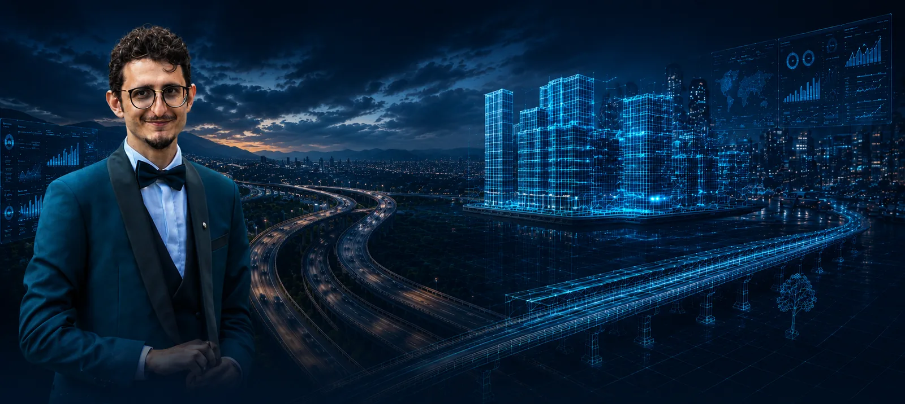
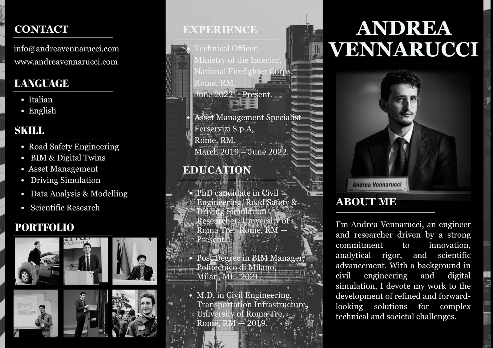

Andrea Vennarucci
Civil Engineer specialised in road safety, fire safety engineering, and asset management.
Andrea Vennarucci is a Civil Engineer and Ph.D. Candidate whose professional and research activities are driven by a common objective: improving safety through engineering, scientific research and technological innovation. His work combines engineering principles with advanced digital technologies to address complex challenges related to transportation systems, critical infrastructure and the built environment, supporting the development of safer, smarter and more sustainable transportation and infrastructure systems.
His multidisciplinary profile integrates transportation engineering, road safety, driving simulation, virtual reality, Building Information Modelling (BIM) and Asset Management. By combining experimental research, and immersive virtual environments, he applies advanced digital methodologies to investigate human behaviour, evaluating safety-critical scenarios and supporting evidence-based engineering decisions.
Alongside his recent academic research, his professional experience encompasses public service in fire safety, risk management and emergency management, as well as engineering practice in Asset Management, Property Management and Facility Management. These experiences have provided direct insight into the challenges associated with the protection of people, infrastructure and strategic assets across both public and private sectors.
This combination of research, engineering practice and operational experience has shaped a multidisciplinary engineering perspective, where scientific knowledge, digital technologies and practical expertise converge to improve the safety, resilience and efficiency of complex systems.
His current interests extend across digital engineering, intelligent infrastructure, simulation technologies, digital asset management and emerging computational approaches for safety assessment. Through an interdisciplinary vision that bridges engineering, technology and applied research, his work contributes to research and engineering activities focused on the development of resilient, human-centred and digitally enabled infrastructure systems.
Transforming complex mobility challenges into innovative and data driven engineering solutions.
combining education, research and engineering practice.
in Civil Engineering
in Civil Engineering
in BIM Manager
Scuola Master F.lli Pesenti
in Civil Engineering
Department of Civil Engineering, Computer Science and Aeronautical Technologies.
Roma Tre University.
2024–2026
Visit Project Website
Executive Profile
A compact visual overview of research interests, skills, professional background and selected portfolio highlights.

Let's Build the Future Together
Whether you are interested in research collaboration, engineering consultancy or innovative digital solutions, I would be pleased to discuss new ideas and opportunities.
Contact Me